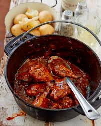

Butter Chicken Potjie

Description
This recipe will make a heartwarming butter chicken in a potjie, the true South African way.
Ingredients
- 8 pack Chicken thighs and drumsticks
- 2 Big Onions
- Vegetable Oil
- 3tbs Garlic
- 2lt Coke
- 100g Brown Onion Soup Powder
- 1 Pack Denys Butter Chicken Cookin Sauce
- 1 Bottle Mrs Balls Chutney
- 250g Cut Butternut
- Salt
- Pepper
Steps
- On medium high heat, add oil to potjie
- Add onions and fry for 5 minutes
- Add garlic and fry for another 5 minutes
- Add Chicken pieces and fry to get a bit of colour
- Add coke until the chicken is fully covered and bring to a simmer
- Lower heat and simmer for 1 hour and 30 minutes
- Add butternut, soup powder, cookin sauce and chutney and simmer for another 10 to 20 minutes, until butternut is soft.
- Serve with basmati rice or fresh bread
Back to Home Page